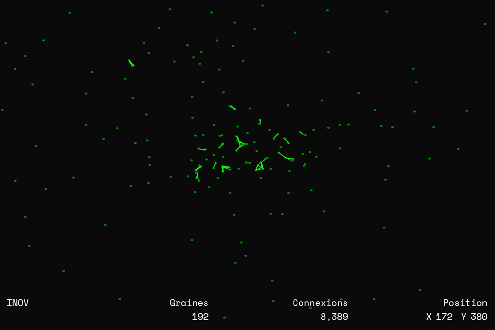
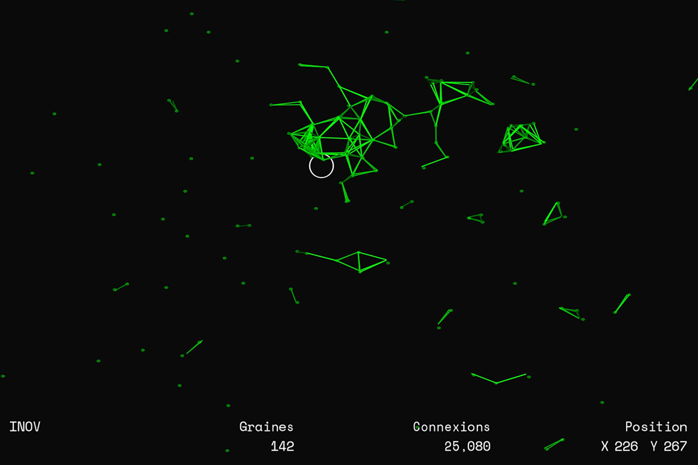
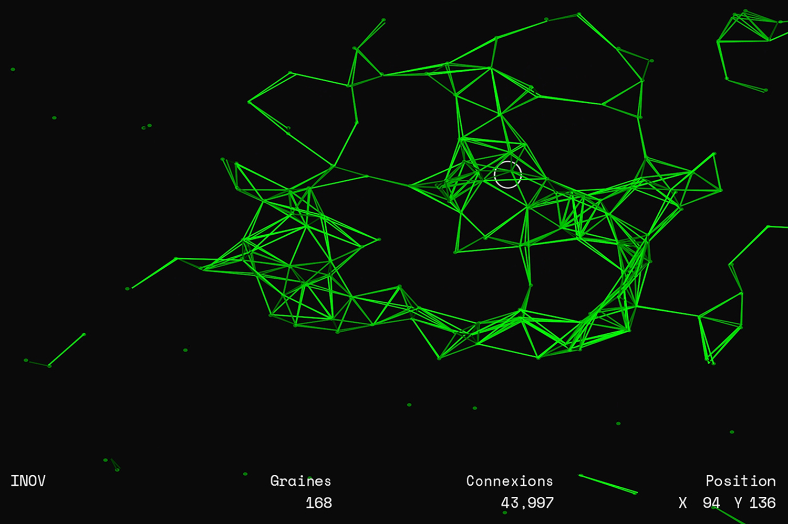

I.N.O.V.
Dispositif interractif installé au Centre Pompidou pendant le cadre du festival "La Fête du Code Créatif".
Contexte
À l’occasion du festival La Fête du Code Créatif organisé par le Centre Pompidou, nous — étudiants de BTS2 — devions concevoir une installation numérique de médiation culturelle se référant à une oeuvre issue de l’exposition La Fabrique du Vivant. Mon groupe et moi travaillions sur le projet d’Alison Kudla : Capacity For (Urban Eden — Human Error), un projet explorant les techniques d’impression d’organismes végétaux.
Installation
Notre installation, baptisée « INOV » (Interaction numérique organique et végétale), ainsi que notre présence visait à promouvoir et faire découvrir les possibilités créatives du code au jeune public, le programme étant réalisé avec Processing 3.
 Nous nous sommes réapproprié l’oeuvre sous forme exclusivement numérique. Le public devient acteur et génère du bout des doigts un organisme végétal volubile. À l’aide d’un Kinect, le script Processing vient détecter la main de l’utilisateur. Celle-ci est utilisée comme curseur et l’utilisateur génère à sa guise les particules numériques de l’installation, sans aucune interaction dite concrète.
Ce projet témoigne des échanges et porosités possibles entre organismes biologiques et organismes numériques, tout comme le fait l’agence de design graphique Chevalvert, spécialisée dans la conception d’installations et outils interactifs. Leurs projets et dispositifs ouvrent des portes entre les différents univers, qu’ils soient numériques, sonores, visuels ou organiques. Le processus de travail de ce studio influence particulièrement ma pratique numérique.
